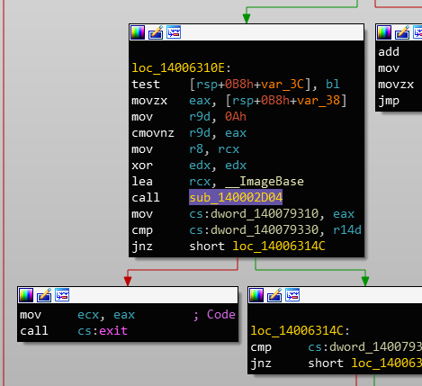

Finding main() easily
The entry point of an executable is normally the runtime initialization code - so how can you easily find main()?
Find the reference to exit() / ExitProcess() and look where rcx comes from 😛 Just remember to xref exit cause sometimes it will be called by another function..

rcx contains the first parameter to exit(). The parameter to exit() is the return code of the program. The return code of the program comes from main so this trick works.